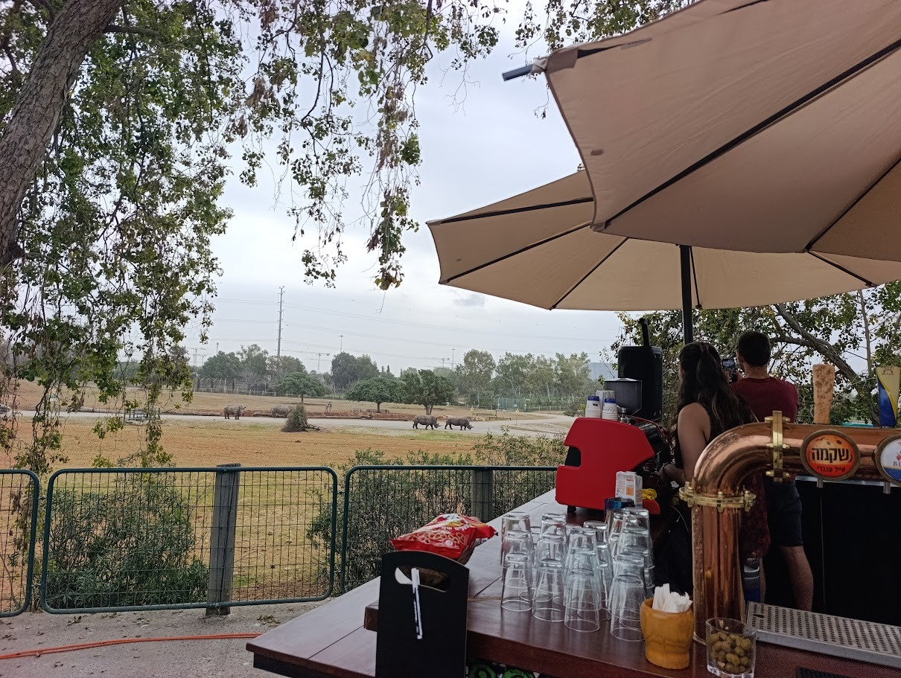
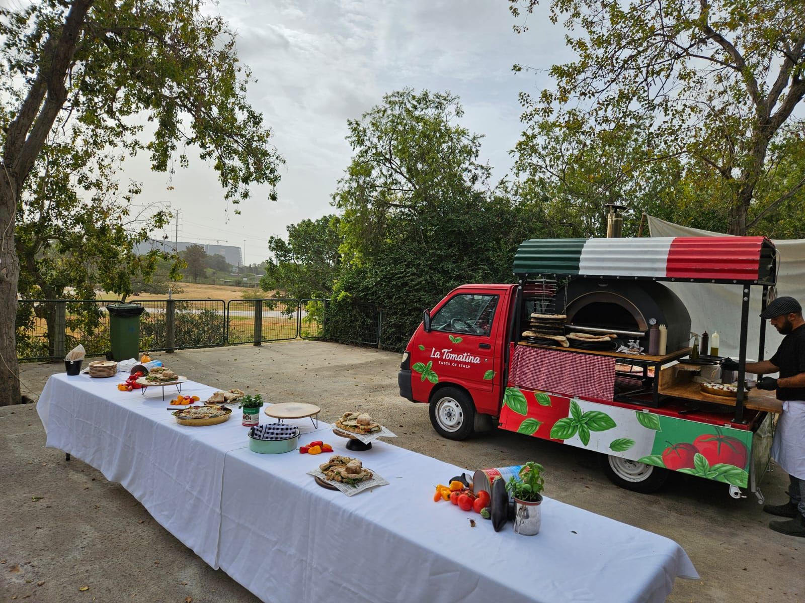
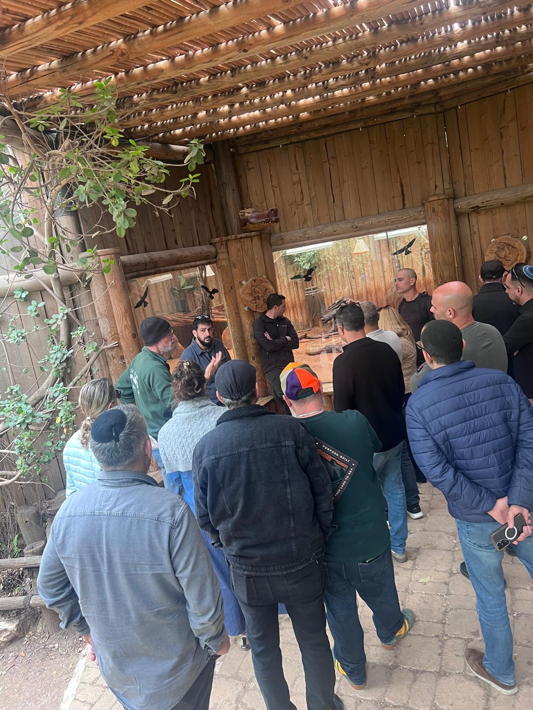
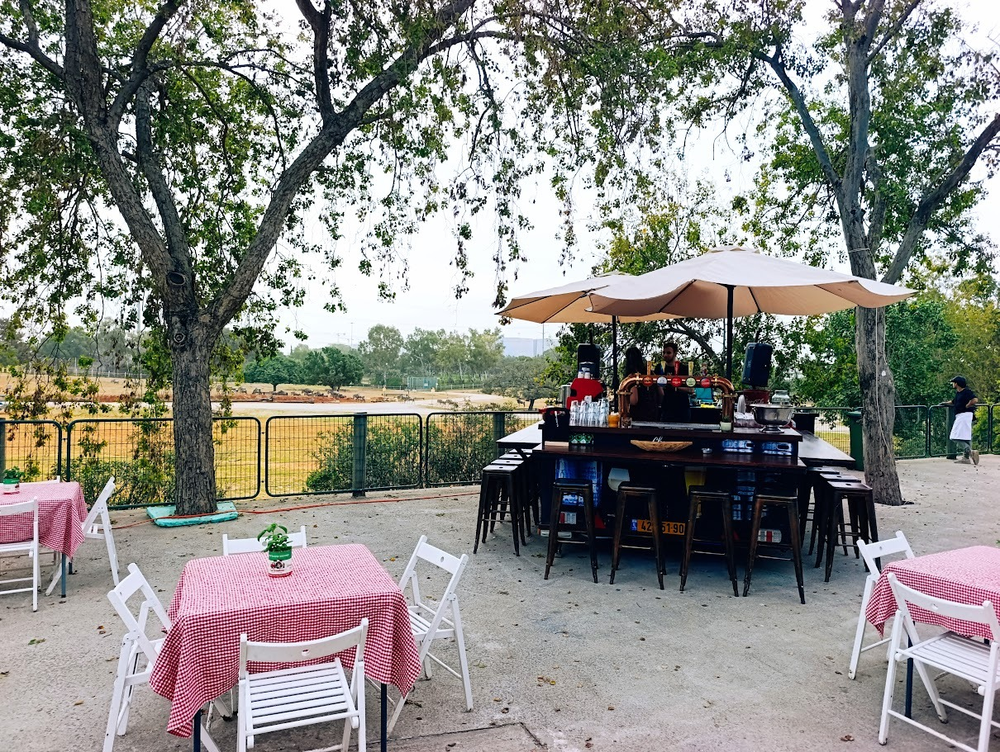

למידה|השראה|השפעה
מפגש חדש בספארי רמת גן
"כי אי אפשר ללמוד שחייה בהתכתבות — ולא ניתן לתאר את החוויה דרך מסך."
שמחים לעדכן על השקת פעילות חדשה וייחודית – יום למידה ארגוני בספארי ברמת גן.
במתכונת גמישה המתאימה לעובדים ולמנהלים, בכל הדרגים.
העמקת נוכחות, ההתבוננות בטבע , חיבור בין עולם החי- וחיבור לסוגיות ניהוליות של מחסור וחלוקת משאבים, המתמודדות עם איומים, חניכה, הקשבה ועוד.
ניתן לייצר מענה "תפור" למטרות שונות, בהתאם להרכב המשתתפים, החל מקבוצה אחת ועד לכלל מנהלי הארגון ביחד.
בכדי לאפשר התרשמות והיכרות עם הפעילות הייחודית נקיים יום חשיפה והתנסות ללא עלות בחודש הקרוב – מהרו להירשם ולהבטיח את מקומכן.ם
למה לצאת מהכיתה?
בעולם שבו הידע הפך למוצר נגיש וזול — הערך הניהולי האמיתי נמצא במקום אחר: בחוויה, בשיפוט, בנוכחות.
מנהלים לא משתנים דרך שקפים. הם משתנים דרך התנסות, מפגש עם מציאות לא צפויה, ורפלקציה שנולדת מתוכה.
יציאה לסביבה לא שגרתית — כמו טבע ובעלי חיים — מאפשרת להשתחרר לרגע מ"זהות התפקיד" ולפגוש את עצמך כמנהל באופן אותנטי יותר.
מה קורה ביום?
נכיר את העולם המיוחד של הספארי וכיצד הוא יכול לתרום להובלת צוותים וארגונים.
המשתתפים ביום יוצאים מהשגרה לשעות של התבוננות, שיח ותוכן. מנקודת תצפית על עולם החי — מדברים על עולם הניהול על מנהיגות, חוסן, אמון, וקבלת החלטות.
למי מיועד?
יום החשיפה מכוון למי שמחפש.ת דרכים חדשות ומותאמות לעולם החדש להשקיע ולפתח את ההון האנושי בארגון — מנהלי משאבי אנוש, רווחה, מנהלי למידה ופיתוח ארגוני.
פרטים ורישום





